The direct product of groups  and
and  is
is
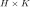
with componentwise multiplication. It contains and as normal subgroups intersecting trivially and generating it.Let
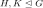
with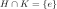
and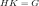
. Then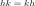
for all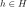
,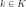
, and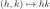
is an isomorphism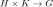
.For , , the commutator
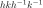
lies in – as 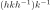
, using normality of – and in – as 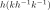
, using normality of; so it is  and the elements commute.
and the elements commute.
The map is then a homomorphism:
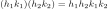
. It is surjective because , and injective because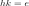
forces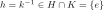
.
Let  and be groups and
and be groups and
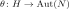
a homomorphism into the group of automorphisms of. The semidirect
product 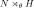
is the set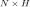
with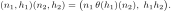
is a group, in which
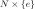
is normal with quotient isomorphic to, and 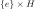
is a subgroup meeting it trivially. It is the direct product exactly when is trivial.
is trivial.
Associativity is a computation in which being a homomorphism
into automorphisms is used twice:
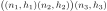
and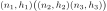
both have first component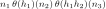
. The identity is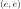
and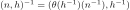
.The projection
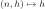
is a surjective homomorphism with kernel , which is therefore normal with quotient; and is closed under the operation. The
product is componentwise exactly when for all  .
.
Let  and
and
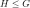
with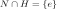
and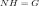
. Then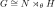
, where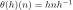
.
Conjugation by maps to itself by normality and is an
automorphism of it, and is a homomorphism because
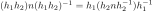
.Define
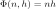
. It is surjective since , and injective since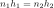
gives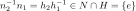
. It is a homomorphism: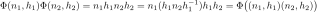
.
Let  be an odd prime. A group of order
be an odd prime. A group of order
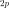
is either cyclic or isomorphic to the semidirect product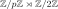
in which the generator of order inverts the generator of order – the
dihedral group.
inverts the generator of order – the
dihedral group.
By Cauchy's theorem there are elements  of order and
of order and  of
order . The subgroup
of
order . The subgroup
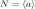
has index,
hence is normal: its two left cosets are and , and
the same holds for right cosets, so 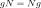
for all . Also
meets trivially, by orders, and
. Also
meets trivially, by orders, and
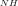
has elements, so . The recognition theorem gives , and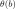
is an automorphism of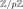
of order dividing, so 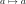
or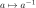
. The first case makes the product direct, and then has order , so
has order , so  is cyclic; the second is the dihedral
group.
is cyclic; the second is the dihedral
group.
The two cases are genuinely different groups with the same normal
subgroup and the same quotient, which is the point: an extension is not
determined by its ends. Classifying all the ways of assembling and
– including those with no complementary subgroup at all, so not
semidirect – is the subject of group cohomology.